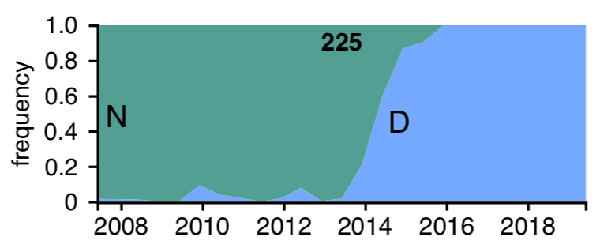

The line plot below reveals sites in seasonal influenza A/H3N2's hemagglutinin where mutations have allowed individual viruses to escape human adaptive immunity in laboratory conditions.
Click on a site shown on the line plot to see the position of that site in the three-dimensional protein structure of hemagglutinin and the frequencies of mutations at that site in natural influenza populations.
Sites shown in black have frequency data. Sites shown in grey do not have any genetic variation in natural populations and therefore do not have any mutation frequency data.
The data shown in the top left panel of this visualization are based on recent lab experiments from Jesse Bloom's lab at the Fred Hutchinson Cancer Research Center. These experiments were led by Juhye Lee, a doctoral student in the Medical Science Training Program (MSTP) and the Genome Science department at the University of Washington.
Seasonal influenza A/H3N2 viruses evolve rapidly, accumulating amino acid mutations in their surface proteins that allow them to escape detection by antibodies from our previous infections or vaccinations. The surface protein hemagglutinin is a primary target of our immune systems. To design more effective vaccines for influenza, we need to know which positions in hemagglutinin can mutate to enable escape from antibodies and whether circulating influenza viruses have any genetic variation at those positions.
To this end, Juhye created every possible single amino acid mutation to the hemagglutinin gene of a specific influenza virus. She infected cells with these mutant viruses in the presence of human sera with influenza antibodies. Juhye measured the number of times each mutation allowed a virus to escape human antibodies relative to the number of times those mutations allowed viruses to infect cells in the absence of antibodies. The line plot below shows this relative enrichment for antibody escape from one human's serum for each position in hemagglutinin. The three-dimensional model to the right shows the positions of these enrichment values protein structure.
Juhye identified important positions of hemagglutinin from the figures above and inspected the frequency of mutations at these sites in natural influenza populations. The stream plot below shows an example of mutation frequencies at one position in hemagglutinin over the last 12 years. The presence of natural genetic variation at positions identified in laboratory experiments supports their importance for the evolutionary success of influenza viruses.

The interactive visualization on this page allows Juhye and others to explore these escape mutations interactively by selecting individual positions in hemagglutinin and displaying the frequencies of mutations at the selected site and the position of the site in the three-dimensional structure of the hemagglutinin protein.